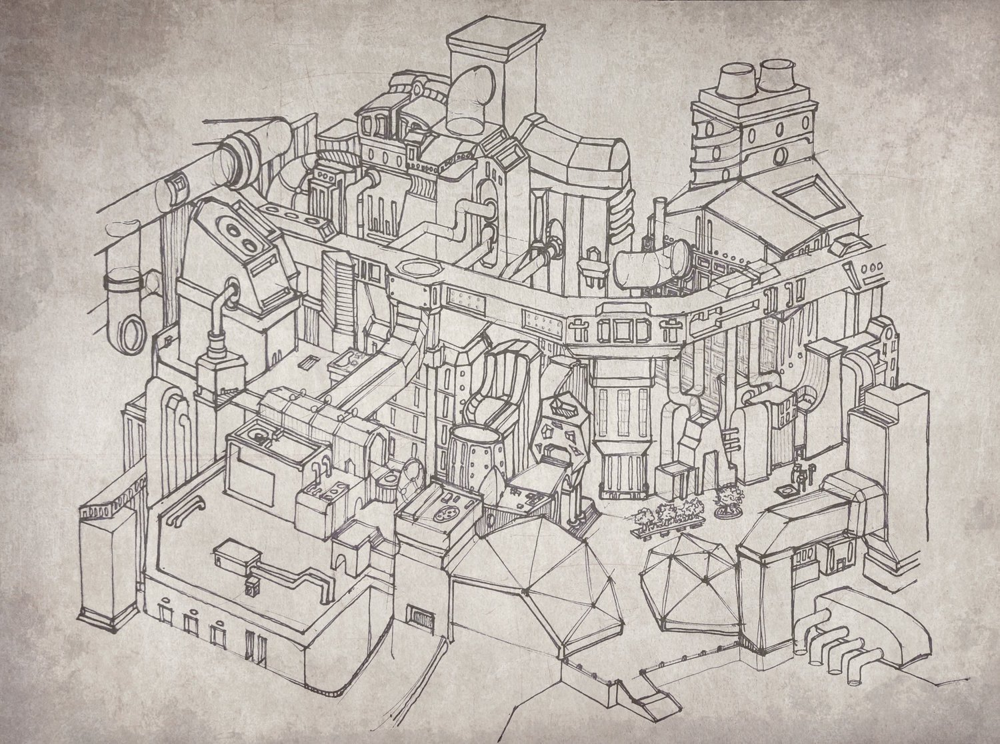
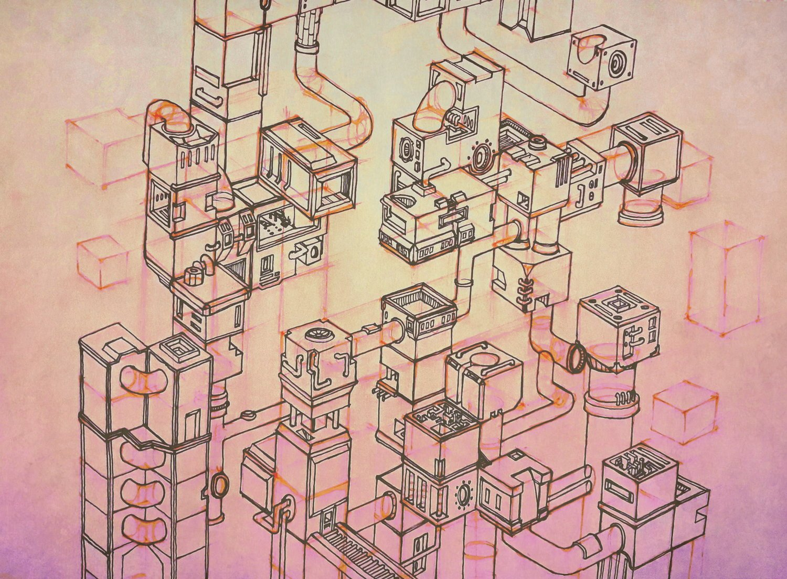
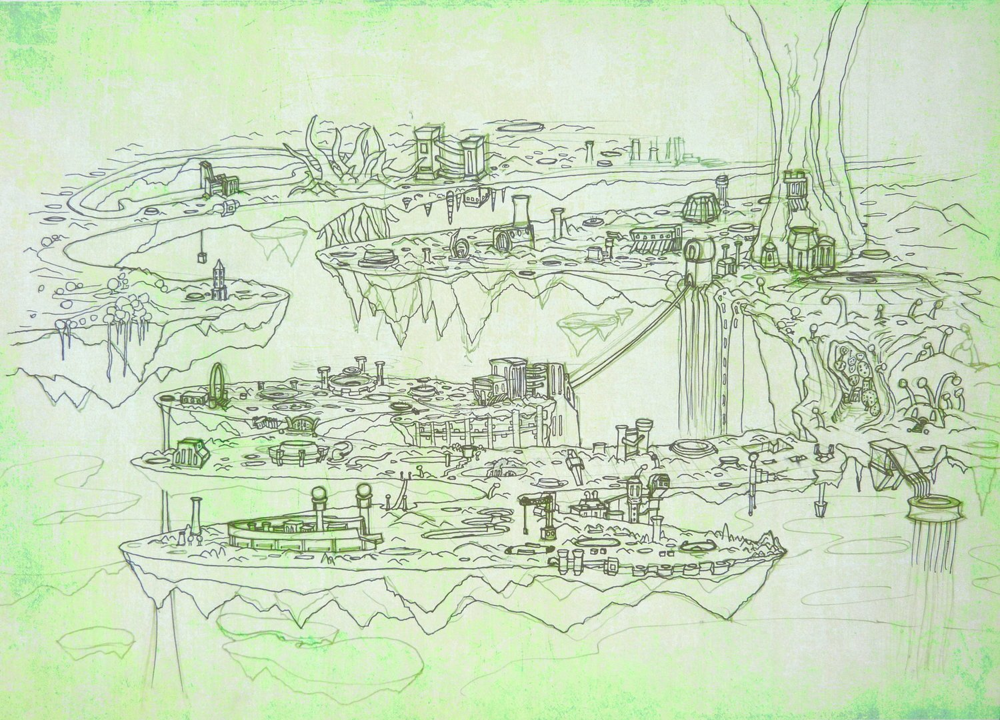
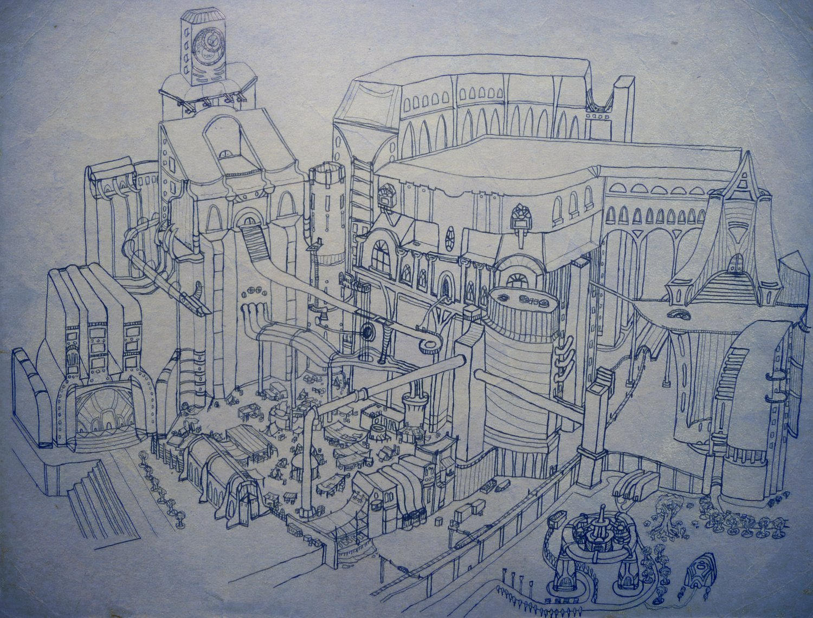
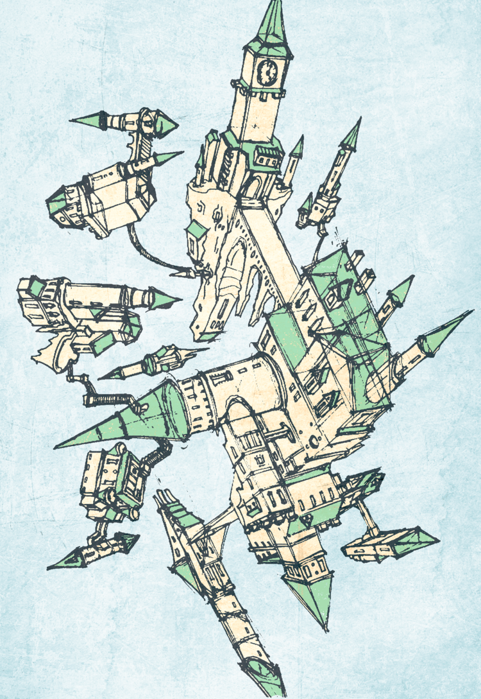
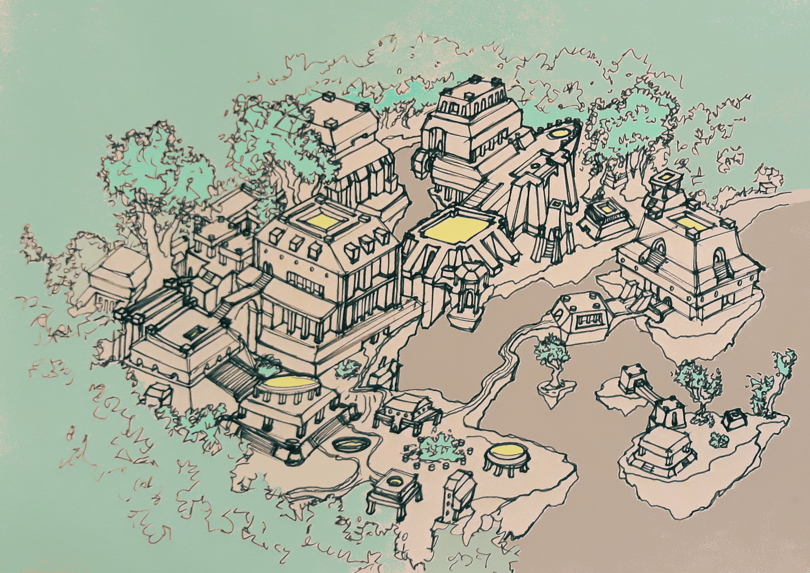
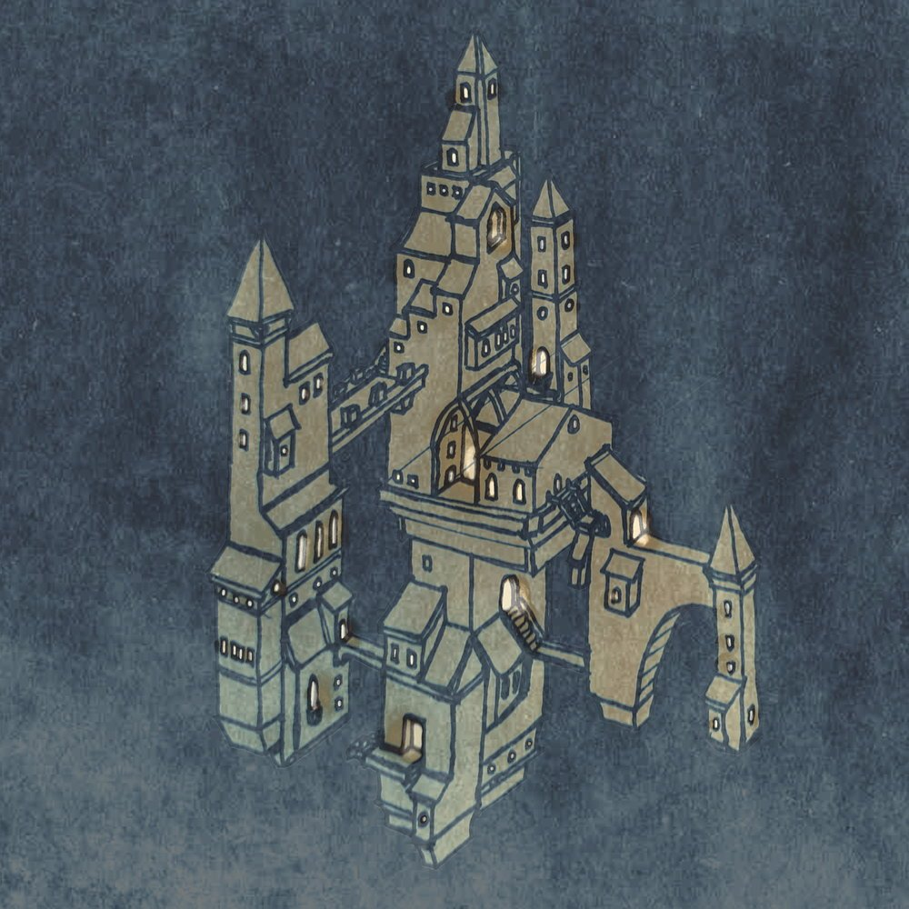
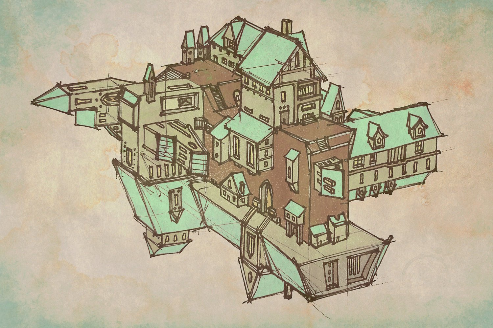

Art
Probably the most connected to my Game Design studies is my general interest in art. I have created drawings, sketches, worlds, stories and random snippets of lore since a young age. The ability to quickly sketch something or make a precise drawing of a location aids me in fleshing out virtual worlds. It helps my team tremendously to have a fast translation of ideas and thoughts onto paper, both mine and other people's.
I had created an online freelance artistic business and had done more than 20 commissions over the course of 2 years, which taught me a lot in terms of interaction with clients, iterative design and scheduling.
I believe my art skills are useful in gamedev for:
- brainstorming
- quick game concepts and idea-sharing
- creating a coherent world
- creating assets









